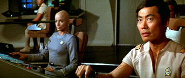
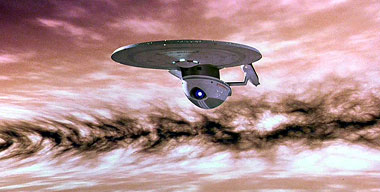

|
| Duas vezes George Takei Aproveitando a chegada da primeira temporada da Srie Clssica em DVD, o Trek Brasilis foi atrs de uma nova oportunidade de entrevistar George Takei, o eterno capito Sulu. Parte do material foi aproveitado em reportagem do jornal Folha de S.Paulo, mas o contedo completo s aparece aqui. Antes de responder s nossas perguntas, George, como sempre uma simpatia, mandou um recado aos fs brasileiros. "Eu ainda saboreio as maravilhosas lembranas de minha visita a So Paulo e a Braslia tantos anos atrs. Por favor, transmita minha apreciao a todos os meus fs brasileiros." Com vocs, pela segunda vez entrevistado do TB, George Takei. |

| Trek Brasilis - A série original de Jornada nas Estrelas chega agora ao Brasil em DVD. Ela deve ser encarada meramente como um produto dos anos 1960, ou há mais que saudosismo para a audiência de hoje? George Takei - Faz 40 anos desde a época em que filmamos o segundo piloto que vendeu Jornada nas Estrelas, e ainda assim a série me parece muito atual. Nos anos 1960, as questões que confrontavam a sociedade eram guerra e paz, corrupção e integridade, preconceito e idealismo, e força vindo da diversidade. Essas questões parecem saídas das manchetes de hoje, não acha? Jornada é tão relevante quanto os eventos nas primeiras páginas dos jornais hoje. TB - O sr. vê então o programa como algo visionário? Takei - Gene Roddenberry, o criador de Jornada, era um verdadeiro visionário. Tanto do que era apresentado como ficção científica e tecnologia especulativa acabou se tornou realidade em 40 anos. Aquele incrível aparelho de ficção científica que chamávamos de "console", reconhecemos hoje como o nosso computador do dia-a-dia. Aquele aparelho "oh uau!" que usávamos na cintura e abríamos para falar com alguém em qualquer lugar era a mesma coisa que hoje chamamos de telefone celular. Hoje, temos robôs perambulando pela superfície de Marte. Hoje, temos uma nave espacial com uma tripulação composta por pessoas de todos os continentes deste planeta. Até russos e americanos trabalhando lado a lado, como em Jornada nas Estrelas. Nós a chamamos de Estação Espacial Internacional. TB - Como o pessoal de Jornada nas Estrelas encarava a "concorrência" da ficção científica na TV, como a série "Perdidos no Espaço", da mesma época? Takei - Jornada nas Estrelas era ficção científica de verdade. "Perdidos no Espaço" era um conto de fadas no espaço. Não havia absolutamente nenhuma comparação.  TB - O sr. esteve com Jornada nas Estrelas desde o segundo piloto, que vendeu a série à NBC. Excetuando Leonard Nimoy e William Shatner, o sr. é o "oficial sênior" no elenco. Lembrando dos tempos em que tudo começou, desde aquela época já havia laços se formando entre os membros do elenco? Takei - Nós todos reconhecíamos Jornada nas Estrelas como televisão muito audaciosa. Sabíamos que era pioneira. Também sentíamos que era inteligente, bem escrita. E isso significava que era muito arriscada. Sabíamos que o primeiro piloto havia sido rejeitado. Então cruzamos os dedos e torcemos. Depois de filmar o segundo piloto, nenhum de nós manteve contato com ninguém. O começo das filmagens dos episódios nos reuniu novamente. No entanto, antes que isso acontecesse, calhou de eu ser escalado para um programa de TV junto com Bill Shatner. Eu acho que o título do programa era "Alcoa Television Theater". Nós discutimos nossas esperanças sobre Jornada nas Estrelas e previmos que iríamos trabalhar juntos nela. Como acabou acontecendo. TB - A primeira temporada da série é a que mais mostra o seu personagem, o tenente Hikaru Sulu. Vê-se que ele gosta de esgrima, tem interesse em botânica, aprecia armas e tem formação em física. O que o sr. acha do desenvolvimento do seu personagem, ele teve a atenção que merecia? Takei - Quando há sete membros regulares no elenco, é muito difícil que todos nós consigamos nosso lugar ao sol, particularmente quando há uma estrela tão dominante quanto Bill Shatner. Todos nós fizemos campanha para ter mais espaço para os nossos personagens. Ninguém achou que nossos personagens receberam a atenção adequada, mas é assim que funciona numa série de televisão. Eu gostaria de ter visto algo da vida privada de Sulu e de suas relações familiares. Claro, eu queria ver Sulu promovido. Como acabou acontecendo no filme Jornada nas Estrelas VI, eu ganhei um posto de capitão. Eu acho que aquele é o melhor dos filmes. TB - E quanto há de George Takei em Hikaru Sulu? Takei - Sulu é diferente de mim e muito parecido comigo. Eu gosto de esgrima. Sulu também. Eu não gosto de armas. Sulu gosta. Eu sou fascinado pela exploração espacial. Sulu também. E, o mais relevante, somos um a cara do outro.
Takei - Meu episódio favorito é "The Naked Time", da primeira temporada. E meu filme favorito, como eu disse, é Jornada nas Estrelas VI: A Terra Desconhecida. Sulu concorda comigo. TB - Como o sr. encarou o cancelamento de Enterprise, a última série de Jornada nas Estrelas? É o fim da franquia? Takei - Ao saber da notícia, pensei em como os atores deviam estar se sentindo. Eu conheço a tristeza e o desapontamento, tendo eu mesmo passado pelas mesmas emoções tanto tempo atrás. Então pensei nos fãs e em como eles nos acompanharam por gerações. Alguns estiveram conosco desde setembro de 1966. Eu sei como eles devem estar machucados. Mas eu também conheço a história de Jornada nas Estrelas. Em 1969, achávamos que era o fim. A série, a jornada, havia acabado. Imagine só. Acho que aprendi algo com a história desde então. Como Spock costumava dizer, "sempre há possibilidades". TB - E o que o sr. anda fazendo agora? Takei - Você pode acompanhar por onde ando em meu site, www.georgetakei.com. Neste mês, falo da publicação da minha autobiografia, "To the Stars", em japonês, e da minha escalação para a peça "Equus", que farei neste outono (no hemisfério Norte). Convido todos os meus fãs brasileiros a visitar Los Angeles e me ver no palco. "Equus" estréia em 26 de outubro e vai até novembro. E fui ao Japão para o lançamento do livro.  Entrevista realizada em 17 de maio de 2005. |
 TB
- O sr. tem um episódio favorito? E quanto a Sulu?
TB
- O sr. tem um episódio favorito? E quanto a Sulu?